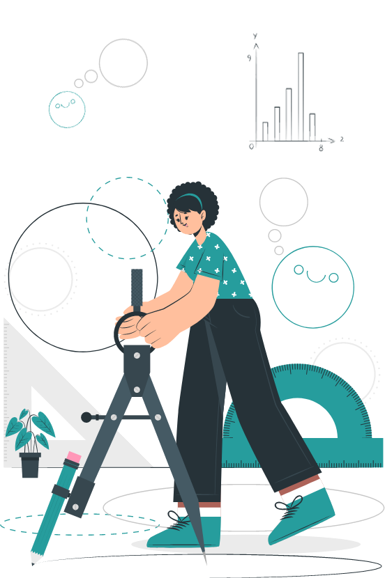

Self Evaluation
Karthick Raja S
Class XII - Yamuna

4. Level of Engagement and Behaviour in class
1
Is almost always not prepared for class. Does not complete home assignments even when given extra time.
2
Frequently (50% of the time) unprepared for class. Needs to be given extra time to submit home assignments. The quality of work turned in is satisfactory and usually has errors.
3
Usually comes prepared to class ( 90% of the time) and is able to answer questions posed by the teacher. Turns in home assignments on time (90% of the time). The quality of work turned in by the student is good.
4
Comes prepared to class and is able to answer question posed by the teacher. Submits home assignments on time. The quality of work turned in by the student is excellent with almost no errors.
4 of 8 Complete
